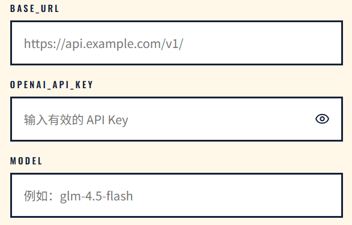
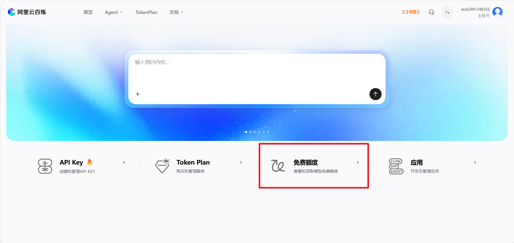
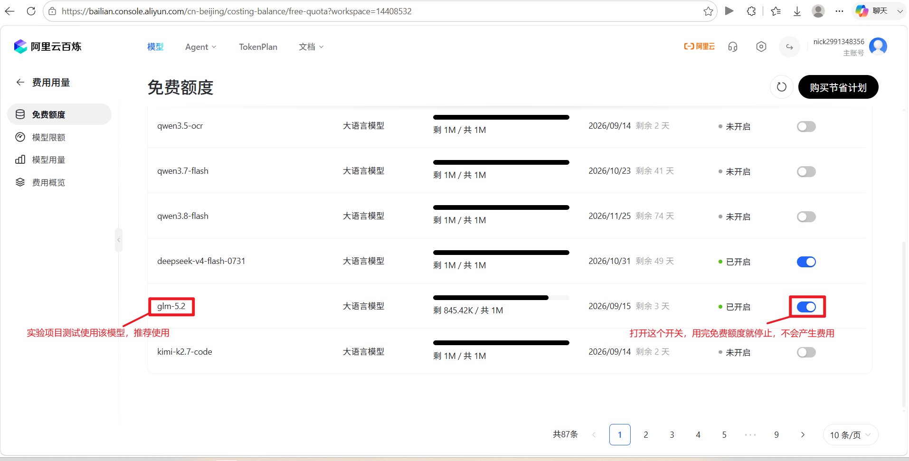
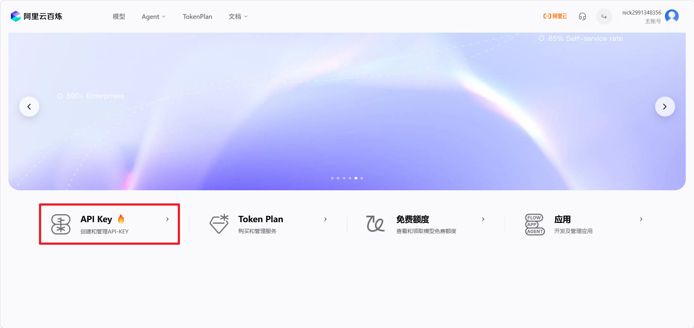
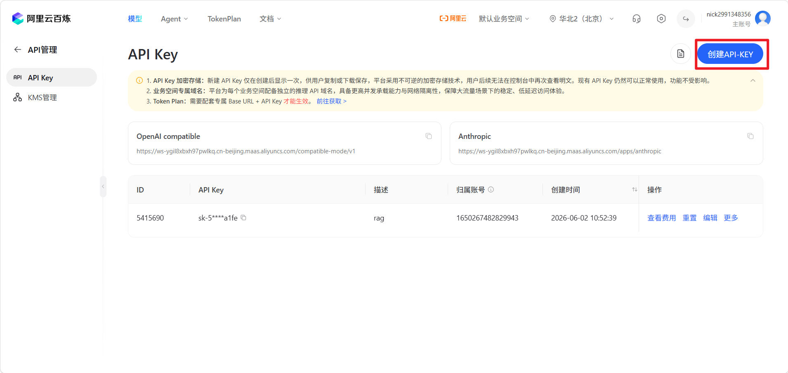
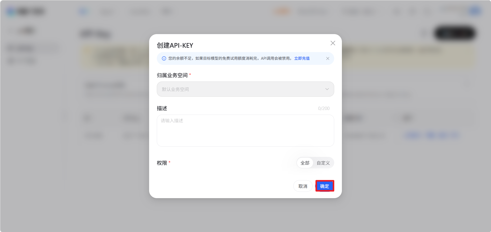
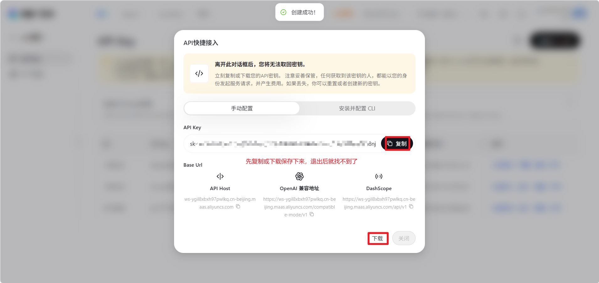
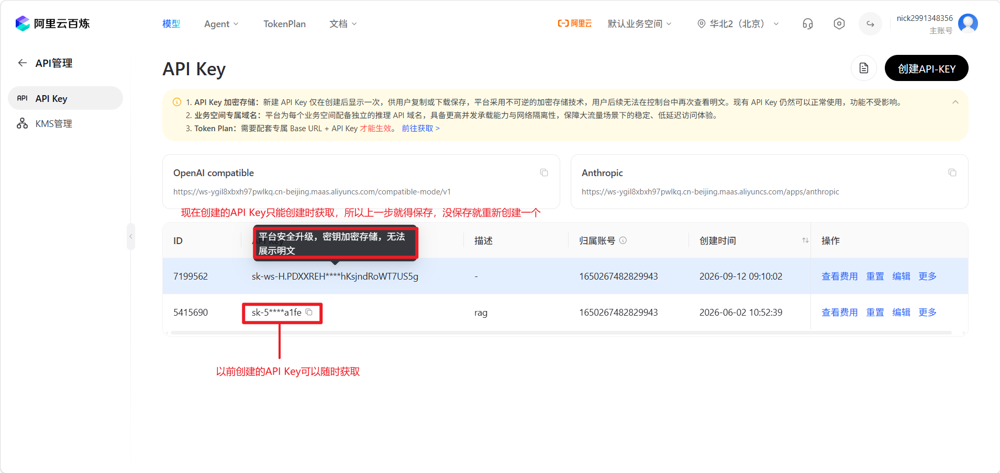
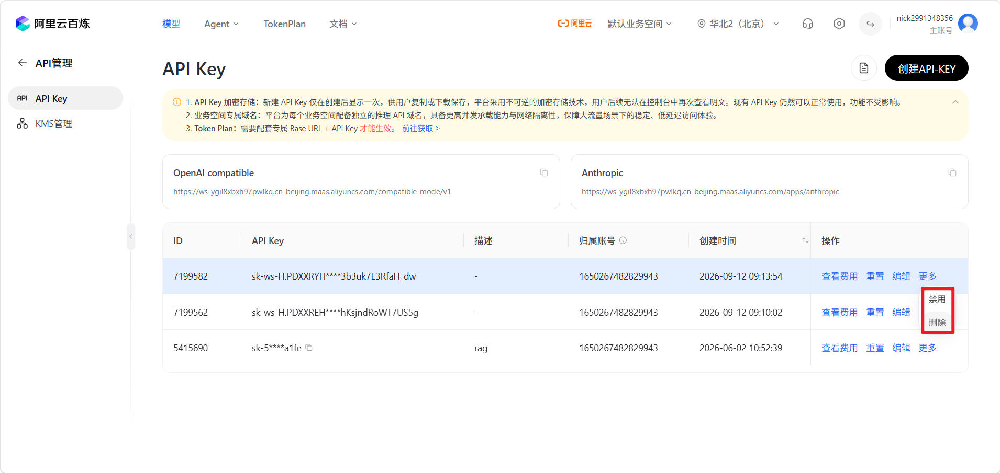
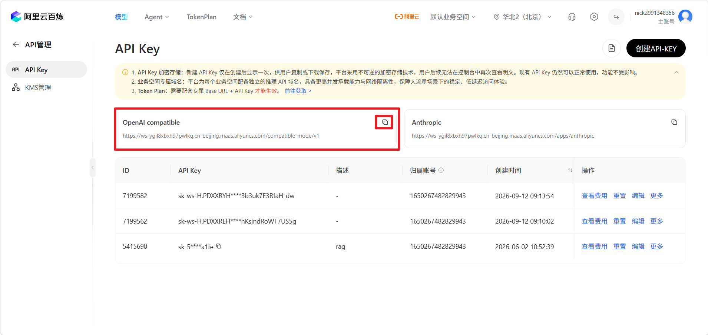

实践项目
AI食堂Agent挑战
在大语言模型快速发展的今天，AI已经不再只是一个会聊天、会回答问题的工具。真正有趣的问题是：如果给大语言模型配上工具、目标、记忆和反馈，它能不能像一个“智能体”一样完成任务？
在本项目中，你将经营一个校园食堂窗口。你是窗口老板，大语言模型（LargeLanguageModel,LLM）是你的厨师，顾客会不断提出点餐需求，而你需要在有限预算内为厨师购买合适的厨具。不同厨具对应不同的工具（Tools），例如平底锅用于煎制，烤箱用于烘烤，蒸笼用于蒸制。厨师接到订单后，会先进行规划（Planning），再调用工具执行行动（Actions），并根据工具返回的观察结果（Observations）判断菜品是否完成。如果缺少工具，帮厨会作为检查器（Evaluator）指出问题，并促使厨师重新规划（Re-planning）。
每位顾客都会根据最终菜品给出评分（Reward）和评价，这些订单记录、评分和评论会被保存为记忆（Memory）。每天打烊后，你可以查看评论区，分析大家喜欢什么菜、哪些工具最值得购买、哪些问题导致评分下降，并在下一天调整窗口配置，争取获得更高的店铺口碑（Reputation）。
阿里云百炼API获取指南
1.阿里云百炼
本项目推荐使用阿里云百炼提供的、带有免费额度的API。
网址：https://bailian.console.aliyun.com/
进入网站后，完成注册并登录。
2.模型连接配置
完成本项目需要配置以下三个参数：
-BaseURL -OpenAIAPIKey -Model

下面分别说明三个参数的获取方式。
3.Model
进入模型相关页面。

本人很早以前使用过，已经忘记是否需要手动领取模型。如果账号中已经可以直接使用，就无需额外领取。

页面中显示的模型名称，就是配置中的Model值。
推荐测试时使用：
glm-5.2
如果没有glm-5.2，换用其他纯文本模型也可以。
其他模型可以自行体验。
名字中带有ocr、image、video等字样的模型没有必要使用，本项目使用普通的纯文本语言模型即可。
4.创建APIKey
进入APIKey管理页面。

按照页面提示创建新的APIKey。




这里得到的Key，就是项目配置中需要填写的：
OpenAIAPIKey
注意：不要在公共场合泄漏自己的APIKey。
如果APIKey被其他人获取，对方可能会消耗你的API调用额度。
为了降低泄漏风险，建议在完成项目之后禁用或删除用于本次项目的APIKey。

5.BaseURL
进入API调用相关页面，找到OpenAI兼容接口对应的地址。

图中框选的地址就是：
BaseURL
将它填写到项目对应的配置项中即可。
6.开始项目
获取以下三项信息后：
-BaseURL
-OpenAIAPIKey
-Model
就可以正式开始项目。
项目地址：
祝你好运！
7.项目提交
本项目承诺不主动持久化APIKey，并尽可能减少Key的暴露面。 完成项目后，请提交以下信息：
通过本项目对agent的理解，经营三天结束后的截图，姓名
发送至：
msc_official@outlook.com